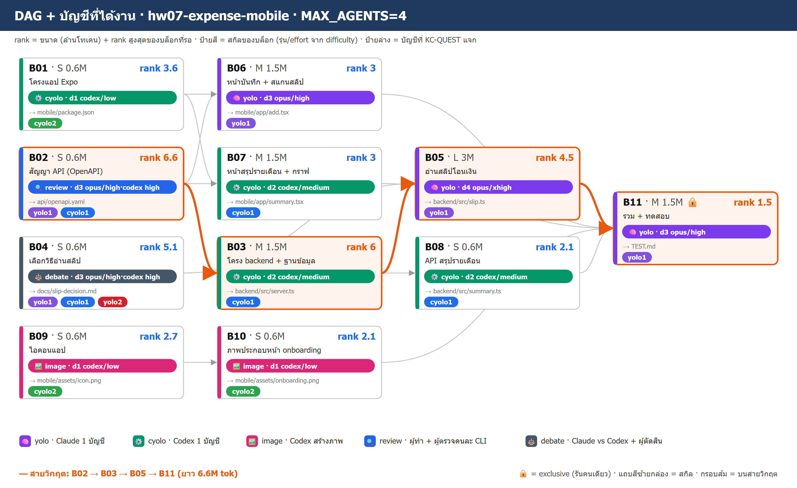
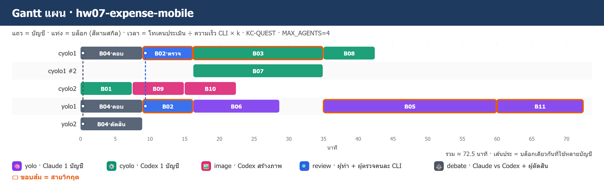
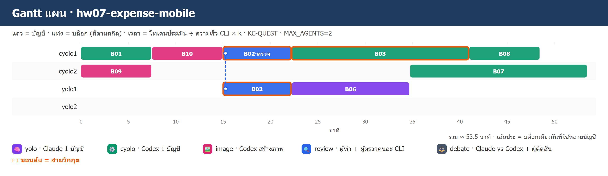

เกิดอะไรขึ้นบ้าง
ตกลงสัญญา API (B02) ก่อน แล้วแอปกับ backend แยกกันทำได้ทันที ฝั่งแอปทดสอบกับ mock server ที่สร้างจาก openapi.yaml การอ่านสลิปแยกเป็นการตัดสินใจ (B04) กับการลงมือทำ (B05) ส่วนไอคอนและภาพ onboarding ทำขนานได้ตั้งแต่นาทีแรก
- แตกโจทย์เป็น 11 บล็อก บอกสกิล ขนาด ความยาก ไฟล์ผล และเกณฑ์เสร็จ ของทุกบล็อก →
blocks.json - สั่ง
dagสกิลตรวจไฟล์บล็อก (วงวน id ซ้ำ สกิลที่ไม่รู้จัก) แล้วคิด rank และสายวิกฤต → ผ่าน ไม่มี ERROR · สายวิกฤต B02 → B03 → B05 → B11 ยาว 6.6M tok - สั่ง
plan --max-agents 4KC-QUEST แจกบล็อกให้บัญชีจากโควตาสมมติ แล้วจำลองเวลา → แจกได้ 11/11 บล็อก · ใช้ agent พร้อมกันสูงสุด 4/4 · ≈ 72.5 นาที →dag.pnggantt-plan.pngPLAN.md - สั่ง
plan --max-agents 2เป็นแผนแยกชื่อhw07-expense-mobile-a2จะได้ไม่ทับไฟล์ของข้อ 3 → แจกได้ 8/11 บล็อก →evidence/PLAN-max2.md - หยุดที่แผน ไม่ได้สั่ง
exportrunreportตามที่อาจารย์กำหนด จึงไม่ใช้โทเคนของทีม
โควตาที่ใช้เป็นค่าสมมติ --accounts yolo1:80,yolo2:60,cyolo1:90,cyolo2:70 สกิลจึงไม่เรียกบัญชีจริงเลย
รันด้วย dagplan.py ตัวเดียวกับในสกิลบนเครื่อง Windows แทน docker exec เพราะตอนนั้น Docker Desktop ไม่ได้เปิดอยู่ (คำสั่งที่รันจริงอยู่ใน evidence/run.log)
บล็อกงาน
แถวสีส้มคือบล็อกบนสายวิกฤต · ขนาด S/M/L = 0.6/1.5/3 ล้านโทเคน · ความยาก 1–6 เลือกรุ่นและ effort ของโมเดล
| บล็อก | ชื่อ | สกิล | ขนาด | ยาก | ต้องรอ | rank | บัญชี (บทบาท) | นาที | ไฟล์ผล · เกณฑ์เสร็จ |
|---|---|---|---|---|---|---|---|---|---|
| B01 | โครงแอป Expo | ⚙️ cyolo | S · 0.6 | 1 | – | 3.6 | cyolo2 · ทำ | 0.0–7.5 | mobile/package.jsonexpo start เปิดแอปบนเครื่องจำลองได้ มี 3 แท็บว่าง |
| B02 | สัญญา API (OpenAPI) | 🔍 review | S · 0.6 | 3 | – | 6.6 | yolo1 · ทำcyolo1 · ตรวจ | 9.0–16.2 | api/openapi.yamlครอบคลุม ล็อกอิน รายการรายจ่าย อัปโหลดสลิป และสรุปรายเดือน validate ผ่าน และสร้าง mock server ได้ |
| B03 | โครง backend + ฐานข้อมูล | ⚙️ cyolo | M · 1.5 | 2 | B02 | 6 | cyolo1 · ทำ | 16.2–35.0 | backend/src/server.tsendpoint ตาม openapi.yaml ตอบได้และผ่าน schema validation ข้อมูลเก็บใน PostgreSQL |
| B04 | เลือกวิธีอ่านสลิป | ⚖️ debate | S · 0.6 | 3 | – | 5.1 | yolo1 · ตอบcyolo1 · ตอบyolo2 · ตัดสิน | 0.0–9.0 | docs/slip-decision.mdเลือกระหว่าง QR บนสลิป OCR หรือ API ตรวจสลิป พร้อมเหตุผล 2 ข้อ และฟิลด์ที่อ่านได้ |
| B05 | อ่านสลิปโอนเงิน | 🧠 yolo | L · 3 | 4 | B03, B04 | 4.5 | yolo1 · ทำ | 35.0–60.0 | backend/src/slip.tsอ่านยอด วันที่ และผู้รับจากสลิป 5 ธนาคาร ถูกอย่างน้อย 90% ของชุดทดสอบ |
| B06 | หน้าบันทึก + สแกนสลิป | 🧠 yolo | M · 1.5 | 3 | B01, B02 | 3 | yolo1 · ทำ | 16.2–28.7 | mobile/app/add.tsxถ่ายหรือเลือกสลิปแล้วฟอร์มกรอกยอด วันที่ หมวด ให้อัตโนมัติจาก API แก้ไขได้ก่อนบันทึก |
| B07 | หน้าสรุปรายเดือน + กราฟ | ⚙️ cyolo | M · 1.5 | 2 | B01, B02 | 3 | cyolo1 · ทำ | 16.2–35.0 | mobile/app/summary.tsxกราฟแท่งรายวันและกราฟวงกลมตามหมวดของเดือนที่เลือก ตัวเลขตรงกับ API |
| B08 | API สรุปรายเดือน | ⚙️ cyolo | S · 0.6 | 2 | B03 | 2.1 | cyolo1 · ทำ | 35.0–42.5 | backend/src/summary.tsGET /summary?month= คืนยอดรวมตามหมวดและรายวัน ตรงกับข้อมูลทดสอบ |
| B09 | ไอคอนแอป | 🖼️ image | S · 0.6 | 1 | – | 2.7 | cyolo2 · ทำ | 7.5–15.0 | mobile/assets/icon.pngPNG 1024×1024 สื่อถึงการบันทึกรายจ่าย อ่านออกเมื่อย่อเหลือ 48 px |
| B10 | ภาพประกอบหน้า onboarding | 🖼️ image | S · 0.6 | 1 | B09 | 2.1 | cyolo2 · ทำ | 15.0–22.5 | mobile/assets/onboarding.pngPNG ภาพประกอบ 3 ขั้น สแกนสลิป ตรวจรายการ ดูสรุป ใช้สีและสไตล์เดียวกับไอคอน |
| B11 🔒 | รวม + ทดสอบ | 🧠 yolo | M · 1.5 | 3 | B05, B06, B07, B08, B10 | 1.5 | yolo1 · ทำ | 60.0–72.5 | TEST.mdสแกนสลิปในแอปแล้วรายการขึ้นในสรุปรายเดือน หน้า onboarding แสดงภาพถูก บันทึกผลใน TEST.md |
DAG · rank · สายวิกฤต

rank คิดอย่างไร
rank = ขนาดของบล็อก + rank สูงสุดของบล็อกที่รอมันอยู่ คิดย้อนจากบล็อกสุดท้าย ใช้ max ไม่ใช่บวกทั้งหมด เพราะบล็อกที่รออยู่ทำพร้อมกันได้ (ตัวหนา = ตัวที่มากที่สุด)
| บล็อก | ขนาด | บล็อกที่รออยู่ | คำนวณ | rank |
|---|---|---|---|---|
| B11 | 1.5 | – | 1.5 (ไม่มีบล็อกไหนรอ) | 1.5 |
| B08 | 0.6 | B11 | 0.6 + max(B11 1.5) = 2.1 | 2.1 |
| B10 | 0.6 | B11 | 0.6 + max(B11 1.5) = 2.1 | 2.1 |
| B09 | 0.6 | B10 | 0.6 + max(B10 2.1) = 2.7 | 2.7 |
| B06 | 1.5 | B11 | 1.5 + max(B11 1.5) = 3 | 3 |
| B07 | 1.5 | B11 | 1.5 + max(B11 1.5) = 3 | 3 |
| B01 | 0.6 | B06, B07 | 0.6 + max(B06 3, B07 3) = 3.6 | 3.6 |
| B05 | 3 | B11 | 3 + max(B11 1.5) = 4.5 | 4.5 |
| B04 | 0.6 | B05 | 0.6 + max(B05 4.5) = 5.1 | 5.1 |
| B03 | 1.5 | B05, B08 | 1.5 + max(B05 4.5, B08 2.1) = 6 | 6 |
| B02 | 0.6 | B03, B06, B07 | 0.6 + max(B03 6, B06 3, B07 3) = 6.6 | 6.6 |
✔ rank ที่คิดเองตรงกับที่สกิลคำนวณทุกบล็อก
สายวิกฤต
เริ่มที่บล็อก rank สูงสุด แล้วเดินไปหาบล็อกที่รออยู่ซึ่ง rank สูงสุดทีละก้าว: B02 (6.6) → B03 (6) → B05 (4.5) → B11 (1.5)
ความยาว = 0.6 + 1.5 + 3 + 1.5 = 6.6M tok เท่ากับ rank ของ B02 พอดี บล็อกบนสายนี้ช้าเท่าไร ทั้งโปรเจกต์ช้าเท่านั้น จึงได้เลือกบัญชีก่อน
Gantt แผน (agent สูงสุด 4)

เริ่มงานรอบไหนบ้าง
| นาทีที่ | บล็อกที่เริ่ม |
|---|---|
| 0 | B04 → yolo1+cyolo1+yolo2, B01 → cyolo2 |
| 7.5 | B09 → cyolo2 |
| 9 | B02 → yolo1+cyolo1 |
| 15 | B10 → cyolo2 |
| 16.2 | B03 → cyolo1, B06 → yolo1, B07 → cyolo1 |
| 35 | B05 → yolo1, B08 → cyolo1 |
| 60 | B11 → yolo1 |
บล็อกที่พร้อมแล้วแต่ต้องรอ
“พร้อม” = บล็อกที่ต้องรอเสร็จครบแล้ว · ตัวเลข agent นับตอนที่บล็อกพร้อม รวมบล็อกที่ KC-QUEST เพิ่งจองในรอบเดียวกัน
| บล็อก | พร้อมเมื่อ | เริ่มจริง | รอ | สาเหตุ |
|---|---|---|---|---|
| B02 🔍 review | 0.0 | 9.0 | 9.0 นาที | agent ใช้อยู่ 4/4 บล็อกนี้ต้องใช้ 2 จึงไม่พอ |
| B09 🖼️ image | 0.0 | 7.5 | 7.5 นาที | agent ใช้อยู่ 4/4 บล็อกนี้ต้องใช้ 1 จึงไม่พอ |
ทำไมแผนยาว 72.5 นาที
เส้นทางที่กำหนดเวลาจบของแผน (ย้อนจากบล็อกที่จบช้าสุด ไปหาบล็อกที่ต้องรอซึ่งจบช้าสุด): B02 → B03 → B05 → B11 · ตรงกับสายวิกฤตจาก rank
| บล็อก | สกิล | ขนาด | เริ่ม–จบ | ใช้เวลา | รอก่อนเริ่ม |
|---|---|---|---|---|---|
| B02 | 🔍 review | S | 9.0–16.2 | 7.2 นาที | 9.0 นาที |
| B03 | ⚙️ cyolo | M | 16.2–35.0 | 18.8 นาที | – |
| B05 | 🧠 yolo | L | 35.0–60.0 | 25.0 นาที | – |
| B11 | 🧠 yolo | M | 60.0–72.5 | 12.5 นาที | – |
เหตุผลตอนแตกบล็อก
จุดที่อาจารย์ให้คิด
เลือกสกิลอย่างไร
| บล็อก | สกิล | เหตุผล |
|---|---|---|
| B02 | 🔍 review | สัญญาที่ทั้งสองฝั่งใช้ ต้องมีคนตรวจว่าครบและสอดคล้องกัน |
| B04 | ⚖️ debate | อ่านสลิปจาก QR (มีแค่เลขอ้างอิง) OCR ตัวอักษร หรือ API ตรวจสลิป มีข้อดีข้อเสียต่างกันชัด เลือกผิดแล้วแก้แพง |
| B09 B10 | 🖼️ image | ไอคอนและภาพประกอบ onboarding เป็นงานภาพโดยตรง |
| – | 🏆 best_of | ไม่ใช้ งานภาพใช้ image ส่วนข้อความในแอปสั้นและตรงไปตรงมา |
| B05 B06 B11 | 🧠 yolo | ต้องคิดหลายกรณี: สลิปหลายธนาคาร ฟอร์มที่กรอกอัตโนมัติแต่แก้ได้ และการรวมแอปกับ backend |
| B01 B03 B07 B08 | ⚙️ cyolo | งานตรงไปตรงมาตามสัญญา: โครงแอป โครง backend กราฟ และ API สรุป |
ลูกศร
ลูกศรที่ตัดไม่ได้
ตั้งใจไม่ใส่ลูกศร เพื่อให้ทำพร้อมกันได้
ถ้าลด agent สูงสุดจาก 4 เหลือ 2
| บล็อก | สถานะ | เพราะอะไร |
|---|---|---|
| B04 ⚖️ debate | ไม่มีบัญชีรับ | สกิล debate ต้องใช้ 3 agent พร้อมกัน แต่เพดานคือ 2 |
| B05 🧠 yolo | ถูกบล็อก | ต้องรอ B04 ซึ่งไม่ได้ทำ |
| B11 🧠 yolo | ถูกบล็อก | ต้องรอ B05 ซึ่งไม่ได้ทำ |

บทเรียน: บล็อกที่ใช้หลายบัญชี (review 2 · debate 3 · best_of n+1) ต้องมีเพดาน agent พอ ไม่อย่างนั้นทั้งบล็อกนั้นและทุกบล็อกที่รอมันอยู่จะไม่ได้ทำเลย
ไฟล์ในโฟลเดอร์นี้
| ไฟล์ | คืออะไร | |
|---|---|---|
blocks.json | บล็อกงานที่แตกจากโจทย์ | ต้องส่ง |
dag.png | DAG + rank + สายวิกฤต + บัญชีที่ได้งาน | ต้องส่ง |
gantt-plan.png | Gantt แผน (agent สูงสุด 4) | ต้องส่ง |
PLAN.md | ตารางแผนและเหตุผลที่ KC-QUEST เลือกบัญชี | ต้องส่ง |
ANSWER.md | คำตอบ 4 ข้อ (ต้องเขียนเอง) | ต้องส่ง |
evidence/prompt.txt | พรอมต์ของข้อนี้ | หลักฐาน |
evidence/run.log | คำสั่งที่รันจริงและผลลัพธ์ทุกบรรทัด | หลักฐาน |
evidence/PLAN-max2.md | แผนเมื่อลด agent เหลือ 2 | หลักฐาน |
evidence/gantt-plan-max2.png | Gantt เมื่อลด agent เหลือ 2 | หลักฐาน |
evidence/plan.json · plan-max2.json | ข้อมูลดิบของทั้งสองแผน | หลักฐาน |


ยังต้องทำเอง: ANSWER.md
อาจารย์ให้เขียน ANSWER.md เอง ข้อละ 1–3 บรรทัด หน้านี้มีข้อมูลที่ใช้ตอบครบ:
| ข้อ | ถามอะไร | ดูที่ |
|---|---|---|
| 1 | สายวิกฤต ยาวเท่าไร คิด rank ของบล็อกแรก (B02) ด้วยมือ | DAG · rank · สายวิกฤต |
| 2 | บล็อกไหนใช้ review · debate · best_of · image เพราะอะไร | เลือกสกิลอย่างไร |
| 3 | ลูกศรที่ตัดไม่ได้ 1 เส้น และคู่ที่ตั้งใจไม่ใส่ลูกศร 1 คู่ | ลูกศร |
| 4 | ลดเหลือ 2 agent แล้วเปลี่ยนอย่างไร | ลดเหลือ 2 agent |